DANDI Archive
This step assumes that you have completed all steps in: Initialize Vendors & DANDI Infrastructure.
Initial Steps¶
Running "terraform apply" upon dandi-infrastructure for the first time¶
Resources (e.g. the servers and environment ) for DANDI Archive are provisioned upon applying the Terraform definitions in
dandi-infrastructure, specifically in the api.tf definition
The resources won't be running anything until your first Heroku release upon the Heroku app.
To see how your code would translate into a new Heroku release, see the GitHub actions workflow used by DANDI Archive here.
Understanding the concept of the Procfile for Heroku¶
Heroku initializes compute on servers (known as dynos in Heroku land). Each dyno that you have runs a process.
Which process, the resources allocated to that process, and how that process is run, is defined in a Procfile.
DANDI Archive defines a Procfile. In this Procfile,
you'll see several entries:
release: a command that is run each time a new version of DANDI API is pushed to Heroku.web: runsgunicorn, a persistent server that handles HTTP requests for the DANDI API.worker: a worker process that runscelerybehind-the-scenes.celeryhandles tasks that would otherwise cause the API to timeout.checksum-worker: another worker, also usingcelery, that specifically calculates if a new file pushed to DANDI Archive is new/updated, and determines what exactly has been changed.analytics-worker: anotherceleryworker that handles all tasks related to processing of S3-related logs.
This Procfile shouldn't need to be changed or reconfigured much for a DANDI-clone; however, it is important to note so that one may understand how DANDI Archive is working.
For information on the resource allocation of dynos in DANDI Archive, please reference the DANDI Infrastructure Docs.
Understanding metrics and logging via Heroku¶
Heroku provides observability in a very convenient manner. If you'd like to see what is happening with your app in real-time, simply access the options shown in the image below
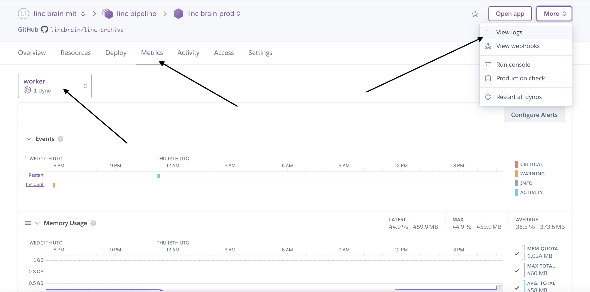
Configuring email alerts via Heroku¶
Heroku will send relevant updates for any concerning behavior/downtime/etc. to your email. Be sure to configure this, as it is a manual step.
You'll find options in the Access tab
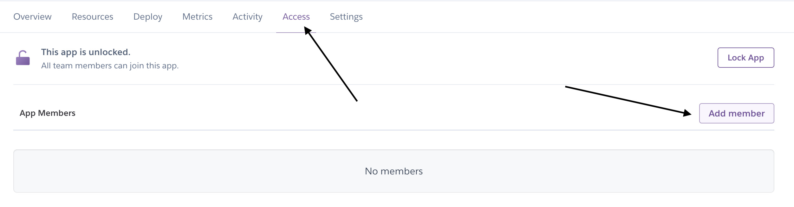
Creating a Django "superuser" (Admin) Account¶
Django has the concept of a superuser -- essentially an administrator user type. For steps such as setting up authentication for DANDI Archive
you'll need to set up a superuser account.
Go into your Heroku app, and identify the Run Console option:
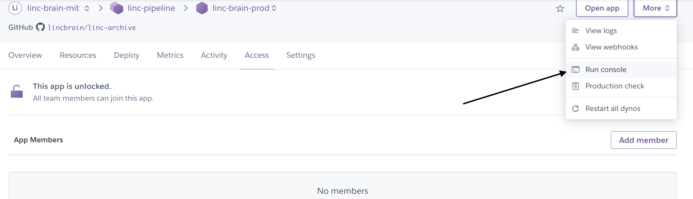
Initialize a bash session
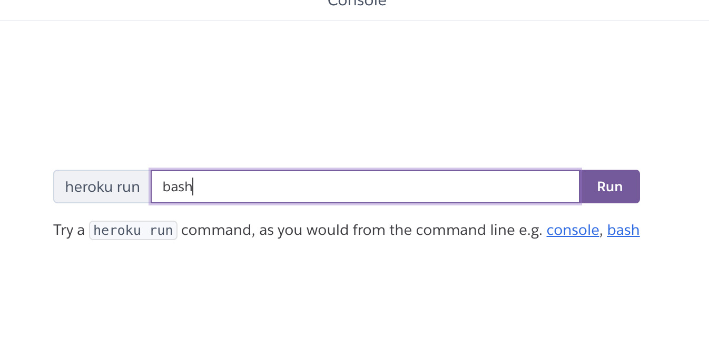
Once in the console, run a quick ls to ensure that you can see the manage.py file. The manage.py file is Django's entrypoint to a handful of management commands.
You'll now want to create a superuser
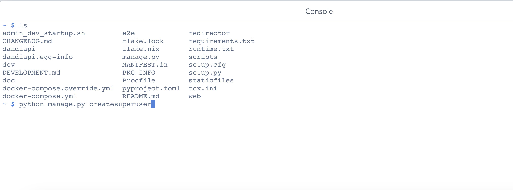
You'll be prompted to create a user -- Note: use an email that is not associated with your GitHub account, as GitHub is the default authentication provider for DANDI Archive.
To do one final test, try using your credentials to log into the Django Admin panel -- it should be located at /admin for your API, such as your-apps-domain.com/admin.
You are all set here!
Frontend Deployment¶
A majority of the necessary setup steps here are defined already during the vendor account setup for Netlify.
The only other major initial setup step for the DANDI Archive frontend is regarding authentication -- see here for more details
API Deployment with GitHub CI/CD¶
Within the DANDI Archive repository, GitHub actions workflows exist for deployments to production and sandbox environments
- Sandbox: by default, releases are manual via the
workflow_dispatchclause in the workflow
To invoke the pipeline, proceed to the Actions tab in GitHub and find the pipeline name in the column on the left
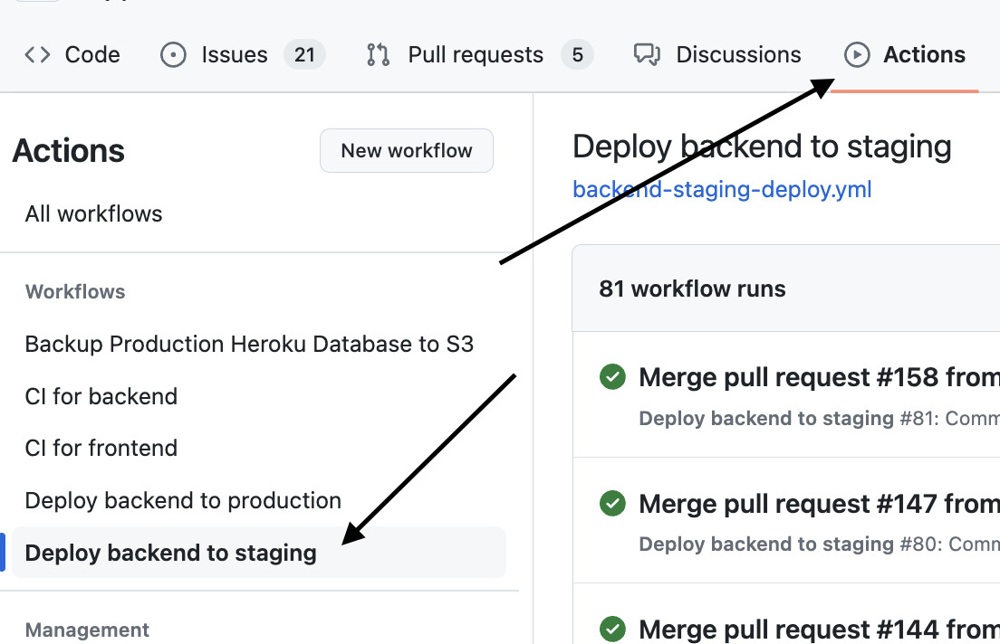
Proceed to click the Run Workflow option.
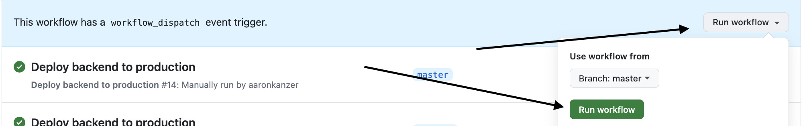
Other than the output of the CI/CD workflow, you can observe the status of the new release via your Heroku app dashboard.
- Production: by default, releases are managed via "tags" applied to given PRs merged into main with the label of "release"
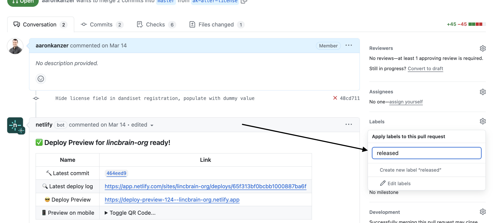
Note: workflow_dispatch may also be applied if you'd like to be more intentional with releases.
Updating Allowed Hosts¶
For the Django-based DANDI Archive API to receive and send HTTP requests without CORS errors, you'll need to add ALLOWED_HOSTS within the dandiapi/settings.py file.
The settings.py file, in general, can be understood as the configuration file for the Django app -- see the Django docs for more info here
For the ALLOWED_HOSTS value to work, the following code snippet can be added, for example:
class HerokuProductionConfiguration(DandiMixin, HerokuProductionBaseConfiguration):
...other configurations...
if 'ALLOWED_HOSTS' not in globals():
ALLOWED_HOSTS = []
ALLOWED_HOSTS += [
'<your-api-url>'
]
Approval of Users¶
By default in DANDI, only users whose emails end in .edu are automatically approved -- for code reference, see here.
For all other users, proceed into the Django Admin panel.
Click on the Users tab -- in the tab, find the appropriate user and click on their e-mail.
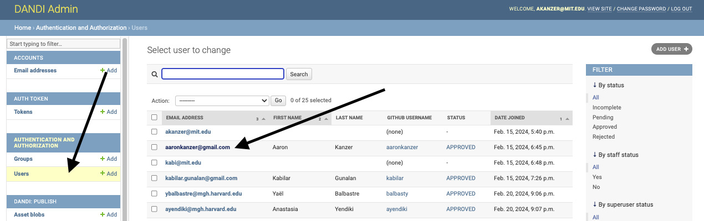
Scroll down to the User Metadata section, where you will see a Status option.
Click Approved and then Save on the bottom of the screen -- the user will now have access to a valid API Key, in which they can interact with relevant assets within your Archive.
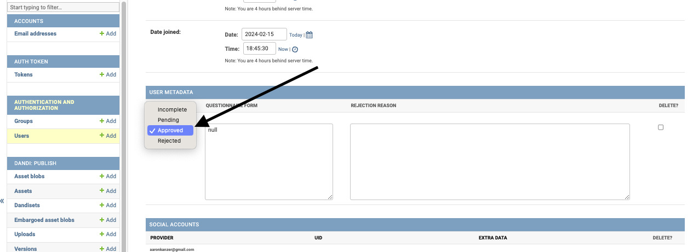
Backups¶
We are using Heroku's "continuous protection" feature which provides database backups reaching back in time 4 days. Additionally, we are configured to take a backup image of the Postgres database every day at 2am EST.
Addition of the Cache Table for Metrics¶
On the DANDI homepage, metrics exist for how many users, and how much data is stored in the Archive.
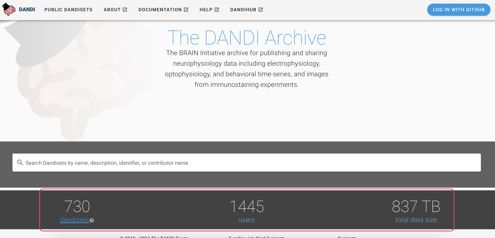
In order to not constantly query for those values, DANDI uses a Django cache table. This table must be separately initialized.
This can be done via the CLI command of:
heroku run python manage.py createcachetable dandi_cache_table --app <insert-app-here>
You may not see updated stats immediately, as the stats are cached for 12 hours at a time.
Customizing Logos on the UI¶
If you'd like to provide your own logo specific to your DANDI clone, you'll need to simply replace the referenced SVG logo in web/src/assets/logo.svg
For reference, see here
{kind=link}
You'll want to ensure that your logo is in SVG format. Updating this logo reference will change the navigation bar logo, as well as the logo that is visible on the landing page.